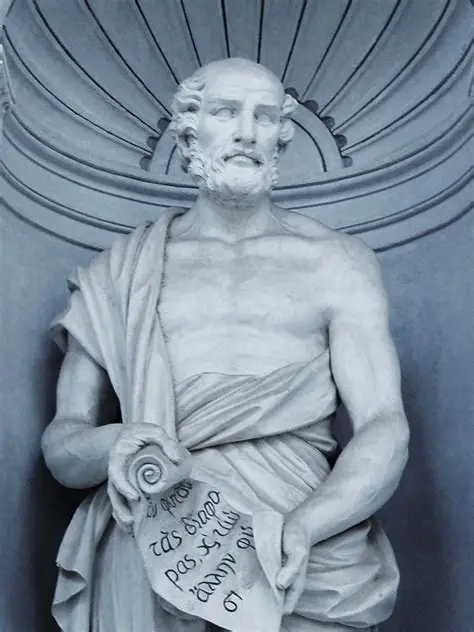

Welcome to the Mathematical World!
Theophrastus
The Father of Botany
Theophrastus (c. 371 BCE – c. 287 BCE) was a Greek philosopher and scientist, best known as the successor of Aristotle and as the “Father of Botany.” Born in Eresos on the island of Lesbos, he became one of Aristotle’s most distinguished students at the Lyceum in Athens. After Aristotle’s death, Theophrastus became the head of the Lyceum and led it for over three decades, turning it into one of the greatest centers of learning in the ancient world.
Contributions to Botany
Theophrastus wrote two foundational works on plants: Historia Plantarum (“Inquiry into Plants”) and De Causis Plantarum (“On the Causes of Plants”). In these texts, he described more than 500 plant species, classifying them by structure, reproduction, and practical uses. His systematic observations included:
- Differences between trees, shrubs, and herbs
- Classification of plants as annuals, perennials, and biennials
- Methods of plant reproduction (from seeds, cuttings, grafting)
- Effects of climate and soil on plant growth
- Medicinal and agricultural uses of plants
These works became the first scientific studies of botany and remained authoritative references for nearly 1,500 years.
Philosophy and Science
As Aristotle’s student, Theophrastus extended his teacher’s work in natural philosophy, logic, and ethics. He studied physics, meteorology, zoology, and human behavior. One of his surviving works, Characters, presented short portrayals of personality types such as “The Boastful Man” and “The Flatterer.” This became the foundation for the literary tradition of character writing and influenced later psychology and literature.
Influence in Other Sciences
- Mineralogy: In On Stones, one of the earliest works in geology, he described properties of gems, metals, and crystals.
- Medicine: He explored the medicinal applications of plants, laying the groundwork for pharmacology.
- Logic and Metaphysics: He refined Aristotelian theories and offered his own insights into causality and reasoning.
Leadership of the Lyceum
When Aristotle fled Athens in 322 BCE, Theophrastus became head of the Lyceum (Peripatetic School). Under his leadership, the school expanded greatly, attracting thousands of students. He preserved Aristotle’s research traditions while also expanding them, ensuring their survival and influence across generations.
Legacy
Theophrastus was deeply admired in his lifetime. Ancient accounts record that when he died around 287 BCE, thousands of Athenians attended his funeral — a remarkable tribute to his influence as both a philosopher and scientist.
Today, he is most celebrated as the founder of botany for his systematic classification of plants, but his intellectual contributions reached into mineralogy, medicine, and ethics. His works bridged Aristotle’s philosophy with later Hellenistic science, making him one of the most versatile and influential thinkers of antiquity.
Facts
- Born in Eresos, Lesbos
- Student and successor of Aristotle
- Wrote Historia Plantarum and De Causis Plantarum
- Described over 500 plant species
- Head of the Lyceum for 30+ years
- Known as the “Father of Botany”